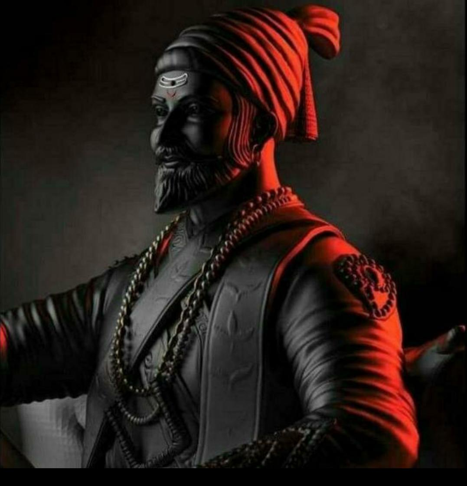
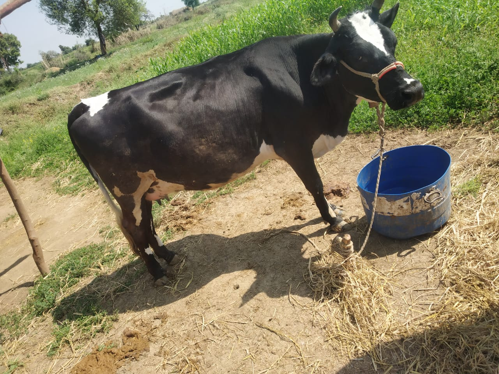

it is very easy to defeat someone, but it is very hard to win someone
Chhatrapati Shivaji Maharaj was a Maratha warrior and founding ruler of the Maratha empire in western India. In India and even in other countries, he is still considered the greatest warrior of his time.
A cow has 32 teeth. A cow will chew about 50 times in a minute, making their jaws move about 40,000 times a day. The main stomach of a cow, the rumen, holds up to 50 gallons of food that has been partially digested.
Chhatrapati Shivaji Maharaj was a Maratha warrior and founding ruler of the Maratha empire in western India. In India and even in other countries, he is still considered the greatest warrior of his time.
A cow has 32 teeth. A cow will chew about 50 times in a minute, making their jaws move about 40,000 times a day. The main stomach of a cow, the rumen, holds up to 50 gallons of food that has been partially digested.